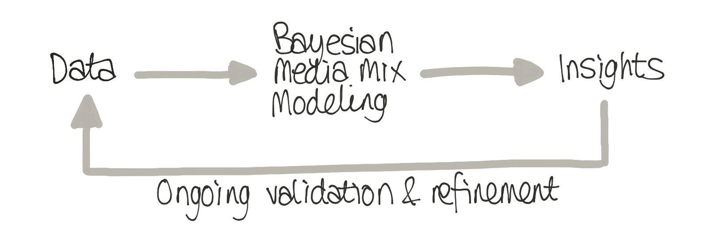
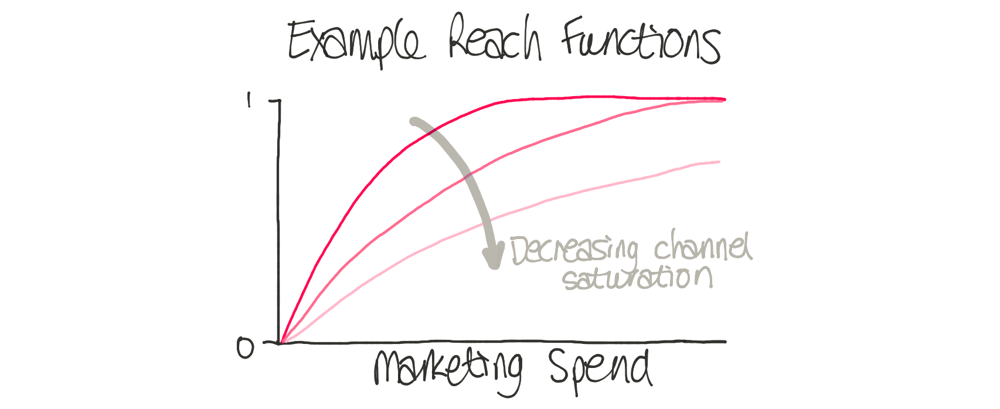
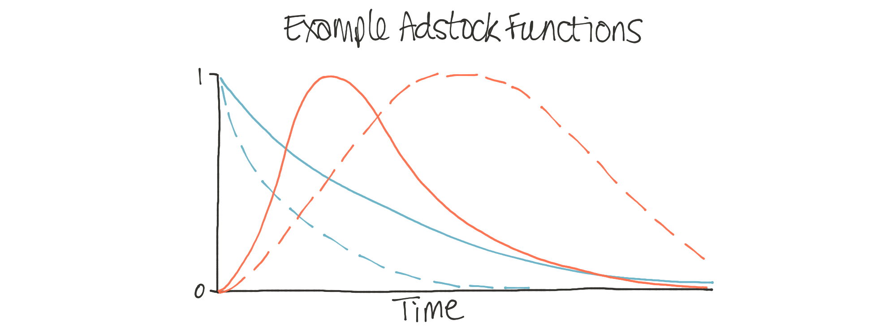
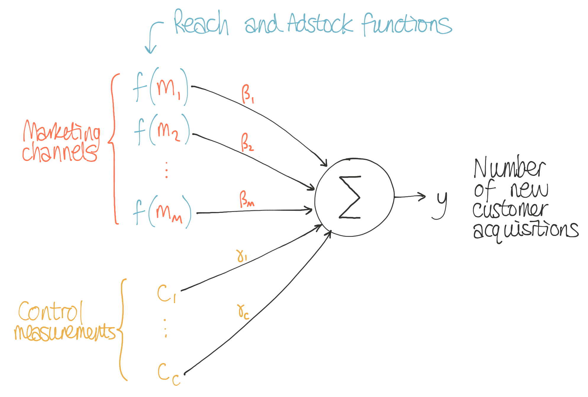

Bayesian Media Mix Modeling for Marketing Optimization
Learn about Bayesian Media Mix Modeling

A problem faced by many companies is how to allocate marketing budgets across different media channels. For example, how should funds be allocated across TV, radio, social media, direct mail, or daily deals?
One approach might be to use heuristics, i.e. sensible rules of thumb, about what might be most appropriate for your company. For instance, a widely used approach is to simply set your marketing budget as a percentage of expected revenues. But this involves guesswork - something we want to avoid regardless of the size of the marketing budget involved.
Fortunately, with Bayesian modeling, we can do better than this! So-called Media Mix Modeling (MMM) can estimate how effective each advertising channel is in gaining new customers. Once we have estimated each channel’s effectiveness we can optimize our budget allocation to maximize customer acquisition and sales.
We at PyMC Labs had an opportunity to unleash our skills on Bayesian MMM’s in partnership with HelloFresh (check their careers page). Our collaboration started after HelloFresh presented their Bayesian MMM at PyMCCon 2020 (make sure to check out their MMM blog post). Out of the natural post-presentation discussion, we decided to work together to see how the PyMC Labs team could build upon the great work by HelloFresh’s data science team.
In this blog post, we outline what you can do with MMM’s, introduce how they work, summarise some of the benefits they can provide, as well as covering some of the modeling challenges. In a follow-up blog post, we will discuss the specific model improvements we implemented.
What can you do with Media Mix Modeling?
Media Mix Modeling gives rich insights and is used in many ways, but here are some of the highlights:
- Understand the effectiveness of different media channels in driving customer acquisition. Not only can you learn from data about the most influential media channels for your business, but you can update this understanding over time. By incorporating new marketing and customer acquisition data on an ongoing basis, you can learn about the changing effectiveness of each channel over time.
- Avoid being misled by other factors. If the rate of customer acquisitions dramatically changes, was this caused by changes in marketing spend across media channels? Or was it caused by other factors such as changes in seasonality, consumer sentiment, economic factors, pricing changes, etc.?
- Inform media spending decisions. Having gained an understanding of the effectiveness of different media channels, such as knowing the customer acquisition cost per channel or the degree of channel saturation, this could be used to inform future marketing spend across channels.
- Optimize future marketing decisions. Rather than just inform future budget spending decisions, it is actually possible to optimize these spending decisions. For example, it is possible to calculate budgets across media channels that maximize new customers for a given total budget. See this blog post on Bayesian decision-making for more information.
- Inspire marketing experiments. If there is uncertainty about the effectiveness or saturation of channels, we can intelligently respond to this by running lift or incrementality tests to resolve some of this uncertainty.
- Validate your understanding through predictions. We gain confidence in our knowledge of the world by making predictions and comparing them to what happens. MMM also generates forecasts that we can check against reality. As a result, we can improve our understanding and modeling iteratively to become more accurate over time.

How does Media Mix Modeling work?
In simple terms, we can understand MMMs as regression modeling applied to business data. The goal is to estimate the impact of marketing activities and other drivers on a metric of interest, such as the number of new customers per week.
To do this, we use two main types of predictor variables:
- The level of spend for each media channel over time.
- A set of control measurements that could capture seasonality or economic indicators.
The basic approach to MMMs uses linear regression to estimate a set of coefficients for the relative importance of each of these predictors, but real-world MMMs commonly incorporate also non-linear factors to more accurately capture the effect of marketing activities on consumer behaviour:
- The reach function: Rather than model the number of customers acquired as a linear function of marketing spend, the reach function models the potential saturation of different channels: While the initial money spent on an advertising channel might have a big impact on customer acquisition, further investment will often lead to diminishing returns as people get used to the message. When we think about optimization, modeling this effect is critical. Some channels may be nowhere close to being saturated and yield significant increases in customer acquisitions for spending for that channel. Knowing the saturation of each channel is vital in making future marketing spend decisions.

- The adstock function: The marketing spend for a given channel may have a short-term effect or long-term impact. Remember that jingle from a TV ad you’ve seen 20 years ago? That’s a great long-term impact. The adstock function captures these time-course effects of different advertising channels. Knowing this is crucial - if we know some channels have short-term effects that quickly decay over time, we could plan to do more frequent marketing. But suppose another channel has a long, drawn-out impact on driving customer acquisitions. In that case, it may be more effective to use that channel more infrequently.

Thus we can summarize the full MMM with this image:

The benefits of a Bayesian Media Mix Model
Traditionally, one fits an MMM model using frequentist methods such as Ordinary Least Squares (which often provide a reasonable pointwise estimate for the coefficients) but it is becoming increasingly common to use the Bayesian approach, which was first introduced by Google in 2017 [Jin et al 2017]. Some of the core benefits that Bayesian Media Mix Modeling have are:
- We can incorporate our prior knowledge. Prior knowledge about marketing channel effectiveness can come from various sources—and we want to be able to use that knowledge. One source could be the intuition that marketing managers have accumulated running hundreds of campaigns, or their knowledge about changes in the price of a competitor’s product, etc. Another source of prior knowledge could be the results of carefully conducted field experiments such as lift or incrementality tests. The Bayesian approach allows prior knowledge to be elegantly incorporated into the model and quantified with the appropriate mathematical distributions.
- We can optimally combine that prior knowledge with data. At the heart of the Bayesian approach is how we update our knowledge in the light of new data. Using a Bayesian approach enables you to combine your team’s valuable knowledge with modeling insights from the MMM’s data-driven strategy. No longer will models overrule human knowledge; with Bayesian methods, they augment human knowledge.
- We can know how sure we are. Another significant benefit of the Bayesian approach is that we know how confident we are. Yes, we want to make data-driven decisions. Still, we only want to do so when the data provides us with a sufficient level of confidence in our understanding. Parameters pertaining to Marketing channels that are estimated with high level of uncertainty can motivate targeted marketing efforts (i.e. incrementality tests) to resolve this uncertainty.
Did you spot the recurring theme of uncertainty? If we already knew everything and had no uncertainty then our job would already be done. But the Bayesian approach offers a principled way of describing, dealing with, and reducing our uncertainty based upon data.
Challenges with Bayesian MMM’s
In one way, MMMs are conceptually simple. So how hard can it be to implement these kinds of models in a Bayesian framework? Well, not so fast! Things can get tricky when moving from concepts to implementation. Here is a list of possible stumbling points—which are precisely the kind of modeling decisions that our team at PyMC Labs can help with:
- Which likelihood function to choose? There are several feasible options here. Suppose we are modeling customer counts. We could consider discrete distributions like the Poisson distribution but also the Negative binomial distribution would be a potential option. Alternatively, if the number of customers is very large, we may also choose a Normal distribution; or perhaps a distribution with longer tails, such as the Cauchy or Student’s T distribution.
- What priors to use? Bayesian MMM’s will require priors over numerous parameters, such as regression coefficients on the control measures and the parameters in the reach and adstock functions. It is easy to end up with hundreds of parameters for state-of-the-art models. Some choices of priors may be less appropriate than others and lead to bad convergence problems. And how, exactly, should we use the data from lift tests to improve these priors?
- How should the reach and adstock functions be parameterized? The parametric forms of reach and adstock functions also have many options. Some ways of parameterizing these functions will be more interpretable than others and more readily provide insights to drive decision-making.
- How to select the correct model? In all likelihood, at least during development, dozens of different MMM variations may be considered. How can we rapidly assess which ones are most promising? It may be useful to have a system in place that allows rapid experimentation, allowing different background variables to be brought in and out of the MMM. Having a coherent and easy-to-change setup is very useful in supporting experimentation and evaluation of ‘what if’ questions.
- How can we ensure rigorous, correct, and fast inference? While Bayesian modeling is very powerful when working with real-world models for decision making it is crucial to ensure the inference is correct. There can be a number of problems that may trap a novice here, such as the correlation between MCMC chains, divergences in sampling, over-specified models… and even subtle aspects about interpreting the interplay between the model, the priors, and the data.
PyMC Labs services
Here at PyMC Labs, we offer bespoke Bayesian Media Mix Modeling services. For this particular project with HelloFresh (who are currently recruiting) our core contributions were:
- Reparameterization of the model to make it much more interpretable.
- Speeding up the sampling process and fixing MCMC chain convergence problems, and
- Building a software framework around the existing code to increase usability and maintainability.
If you are interested in learning what we did in more detail, then check out the second blog post in this series on Bayesian MMM’s.
Work with PyMC Labs
If you are interested in seeing what we at PyMC Labs can do for you, then please email info@pymc-labs.com. We work with companies at a variety of scales and with varying levels of existing modeling capacity. We also run corporate workshop training events and can provide sessions ranging from introduction to Bayes to more advanced topics.